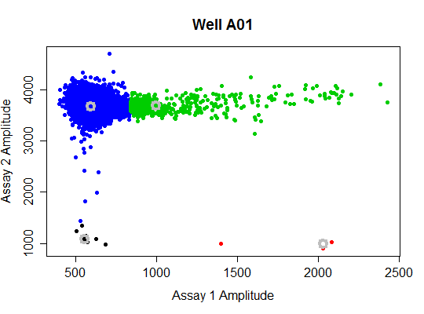

A list of 32 data frames.
Michael Jahn Flow cytometry group / Environmental microbiology Helmholtz Centre for Environmental Research - UFZ Permoserstrasse 15 / 04318 Leipzig / Germany phone +49 341 235 1318 michael.jahn [at] ufz.de / www.ufz.de
These are the raw data from the pds_raw data set as measured by the
BioRad QX100 Droplet Digital PCR System.
The results can be as calculated by the BioRad QX100 Droplet Digital PCR
System are to be found in pds.
Setup: Duplex assay with constant amount of genomic DNA and six 10-fold dilutions of plasmid DNA with 4 replicates, ranging theoretically from ~ 10^4 to 10^-1 copies/ micro L plus 4 replicates without plasmid DNA. Included are No-gDNA-control and No-template-control, 2 replicates each.
Annotation: FX.Y (X = dilution number, Y = replicate number). Hardware: Bio-Rad QX100 Droplet digital PCR system Details: Genomic DNA isolated from Pseudomonas putida KT2440. Plasmid is pCOM10-StyA::EGFP StyB [Jahn et al., 2013, Curr Opin Biotechnol, Vol. 24 (1): 79-87]. Template DNA was heat treated at 95 degree Celsius for 5 min prior to PCR. Channel 1, primers for genomic DNA marker ileS, Taqman probes (FAM labelled). Channel 2, primers for plasmid DNA marker styA, Taqman probes (HEX labelled).
The results can be as calculated by the BioRad QX100 Droplet Digital PCR
System are to be found in pds.
Setup: Duplex assay with constant amount of genomic DNA and six 10-fold dilutions of plasmid DNA with 4 replicates, ranging theoretically from ~ 10^4 to 10^-1 copies/ micro L plus 4 replicates without plasmid DNA. Included are No-gDNA-control and No-template-control, 2 replicates each.
Annotation: FX.Y (X = dilution number, Y = replicate number). Hardware: Bio-Rad QX100 Droplet digital PCR system Details: Genomic DNA isolated from Pseudomonas putida KT2440. Plasmid is pCOM10-StyA::EGFP StyB [Jahn et al., 2013, Curr Opin Biotechnol, Vol. 24 (1): 79-87]. Template DNA was heat treated at 95 degree Celsius for 5 min prior to PCR. Channel 1, primers for genomic DNA marker ileS, Taqman probes (FAM labelled). Channel 2, primers for plasmid DNA marker styA, Taqman probes (HEX labelled).
Jahn et al., 2013, Curr Opin Biotechnol, Vol. 24 (1): 79-87
Jahn M, Vorpahl C, Tuerkowsky D, Lindmeyer M, Buehler B, Harms H, et al. Accurate Determination of Plasmid Copy Number of Flow-Sorted Cells using Droplet Digital PCR. Anal Chem 2014; 86:5969--76. doi:10.1021/ac501118v.
#str(pds_raw) bioamp(data = pds_raw[["A01"]], main = "Well A01", pch = 19)
Cluster.4 Cluster.1 Cluster.3 Cluster.2 Counts Ch. 1 11552.00000 11.00000 398.0000 3.00000 Counts Ch. 2 11552.00000 11.00000 398.0000 3.00000 Location Ch. 1 590.94425 553.69556 995.2142 2026.70093 Location Ch. 2 3676.18494 1084.54590 3694.3724 995.84230 Dispersion Ch. 1 51.25585 24.43643 182.0612 80.47304 Dispersion Ch. 2 115.59810 84.69588 136.8308 32.88620